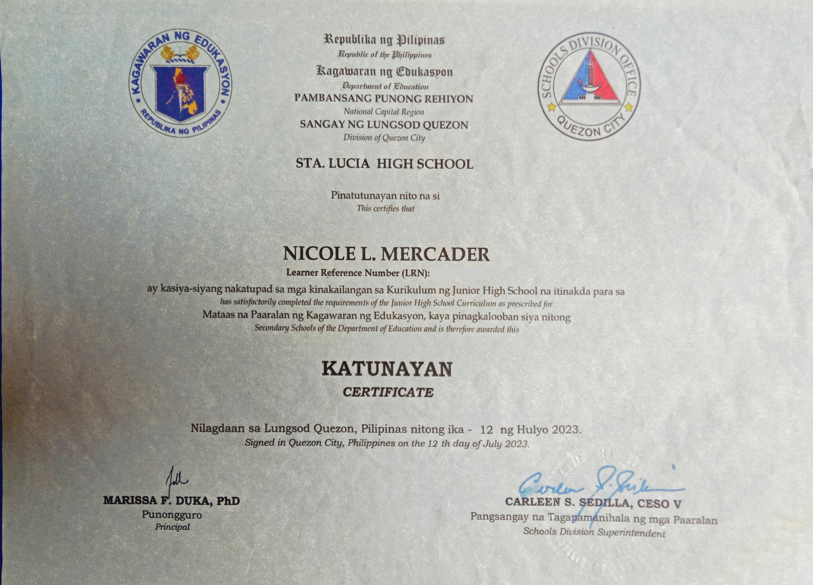

NICS✿
Welcome to my personal portfolio
Hi, I'm Nicole Mercader
IT Student & Future Web Developer
I am an Information Technology student who enjoys learning about computers, technology, and website design. This portfolio presents my background, skills, projects, and achievements.
A Little About Me
Get to Know Me
Nicole Mercader
IT Student
Hello! Thank you for visiting my portfolio. My name is Nicole Mercader, and I am an Information Technology student at Bestlink College of the Philippines. I am currently learning about web fundamentals and how websites are planned, created, and designed.
I believe that learning technology takes patience, practice, and curiosity. I want to continue improving my skills, explore new ideas, and gain more experience through school activities and personal projects.
- Name: Nicole Mercader
- School: Bestlink College of the Philippines
- Field: Information Technology
- Subject: IT Elective 1 - Web Fundamentals
What I'm Learning
My Skills
HTML
Building the structure and content of web pages.
Currently learningCSS
Styling websites with colors, layouts, and spacing.
Currently learningComputer Literacy
Using computers and common digital applications.
Building experienceTeamwork
Sharing ideas, cooperating, and learning with others.
Learning togetherMy Learning Journey
Educational Background
Bestlink College of the Philippines
Current Studies
Information Technology — Studying technology and learning the fundamentals of creating websites and digital projects.
Ligao National High School
Completed April 2025
General Academic Strand - ICT (Computer Systems Servicing)

Sta. Lucia High School
Completed July 2023
Junior High School Education

Rosa Susano - Novaliches Elementary School
Completed April 2019
Elementary Education

My School Work
Projects & Activities

Graduation & Milestones
A memorable moment from my school completion and academic journey.
HTML & CSS Practice
Learning to organize page content and style websites with layouts, colors, and spacing.
Academic Activities
School tasks and collaborative activities that help me develop practical skills.
Milestones I'm Proud Of
My Achievements

01. 2nd Place - Bidyokasiya
19th Regional ALS Encampment

02. 3rd Place - TV Infomercial
2025 Patribayan sa ALS

03. Guiding Star of Extravaganza
Certificate of Appreciation

04. Work Immersion (80 Hours)
Ligao City Heritage Library and Museum

05. Driving NC II (118 Hours)
Renet Technological College

06. CCS Officer - Mr & Ms CCS 2025
Bestlink College of the Philippines
Outside the Classroom
My Interests & Hobbies
Exploring Technology
Discovering useful digital tools and learning how websites work.
Creative Design
Trying colors, layouts, and visual ideas for school and personal projects.
Listening to Music
Enjoying music during free time and using it to relax.
Learning New Things
Exploring topics and practicing skills that can help me grow.
Looking Ahead
My Future Goals
- ✔ Improve my HTML and CSS skills.
- ✔ Create more useful and creative website projects.
- ✔ Complete my Information Technology studies.
- ✔ Gain experience through school projects and practice.
- ✔ Become a confident and responsible IT professional.
Let's Connect

Thank you for taking the time to explore my portfolio.
Email: nmercader47@gmail.com
Contact Number: 09674559765
School: Bestlink College of the Philippines
Field of Study: Information Technology
Back to Home